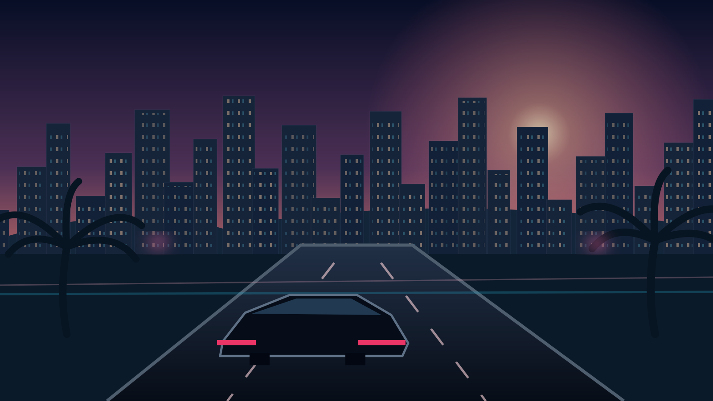
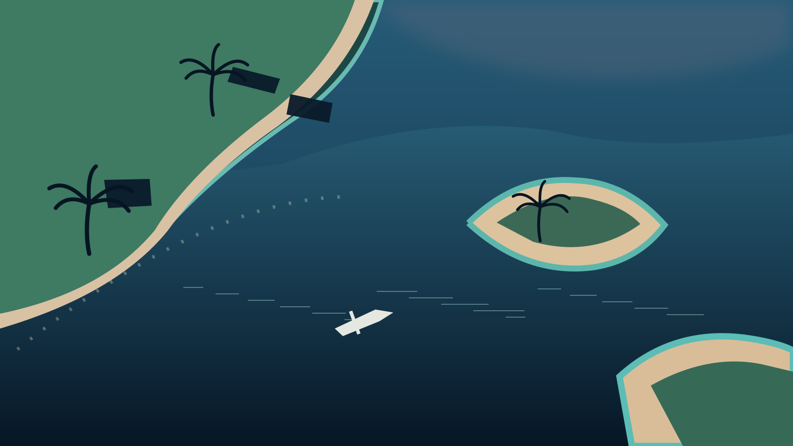
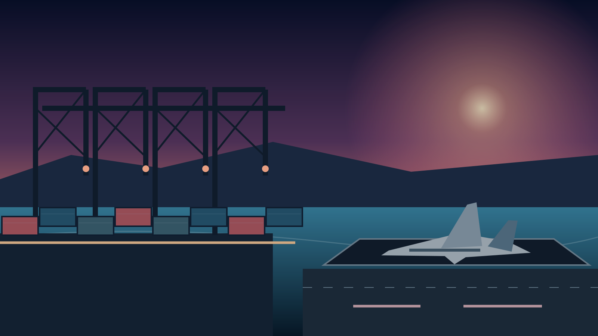

Concept art
Downtown
Vertical skylines, business districts, nighttime pursuits and dense streets.
Enter the other side of paradise. A coastal world of ambition, pursuit and the choices that define an outlaw.
Grand Coast Outlaws is an early-stage Unreal Engine 5 / C++ multiplayer project. Visuals on this site are concept illustrations, not captured gameplay. Release date not announced.
GCO imagines a connected coastal metropolis where a routine patrol can become a high-speed pursuit, and a quiet night can turn into a citywide manhunt. Players will eventually choose their place in a world shaped by police work, criminal crews, commerce and competition.
The first priority is a small, testable district and a complete multiplayer gameplay loop—not claiming that the entire envisioned city already exists.

The envisioned world reaches beyond downtown: sunlit coastlines, industrial shipping districts, islands and highways. These are artistic studies for the planned environment, not finished in-game locations.
Vertical skylines, business districts, nighttime pursuits and dense streets.

Shore roads, beaches and island routes across open water.

Industrial infrastructure, guarded areas and new mission possibilities.
The following experiences are design goals. Feature completion will be published only after playable evidence and testing.
Respond to incidents, patrol urban districts, coordinate with other players and stop escape attempts.
Plan high-risk robberies, move through the city and deal with the consequences of a rising wanted level.
Bank, jewelry and commercial robberies are part of the intended vertical-slice gameplay progression.
Road-based mobility, different vehicle classes and police chases are core to the vision.
Day-night atmosphere, interaction-rich districts and an economy are planned for later milestones.
Cooperative and competing players, role-specific paths and persistent systems remain development targets.
The Unreal Engine 5 / C++ foundation, prototype menu and limited editor multiplayer tests are documented internally. Full production networking, finished gameplay, and the expanded world are not yet validated.
Transparency matters: public milestones distinguish reported prototype checks from independently validated releases.